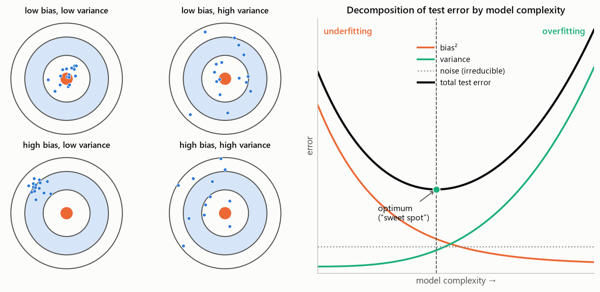
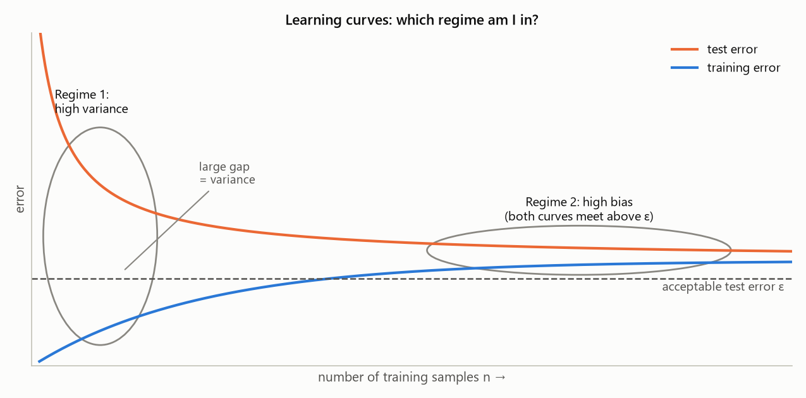
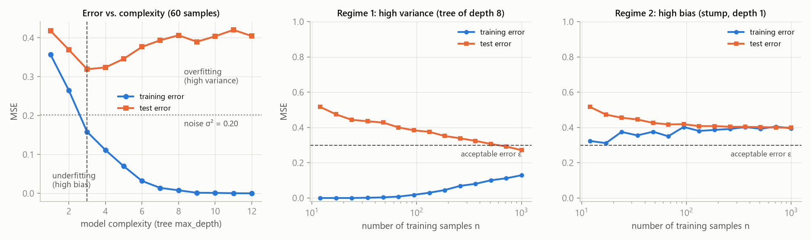
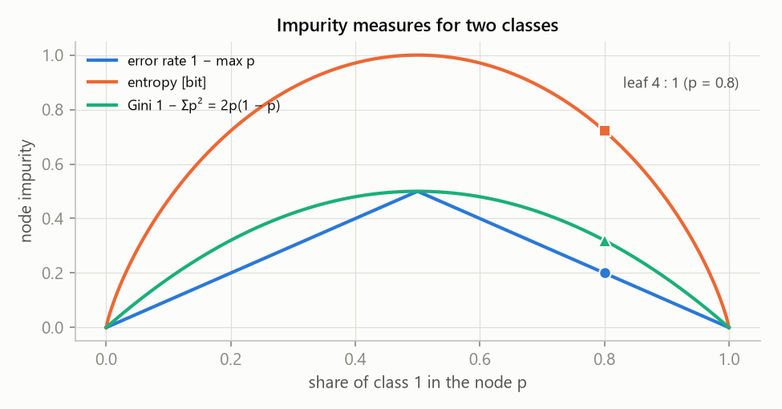
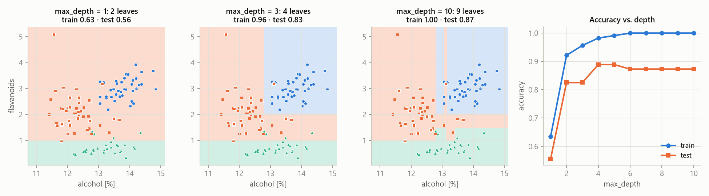
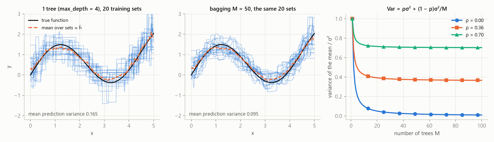
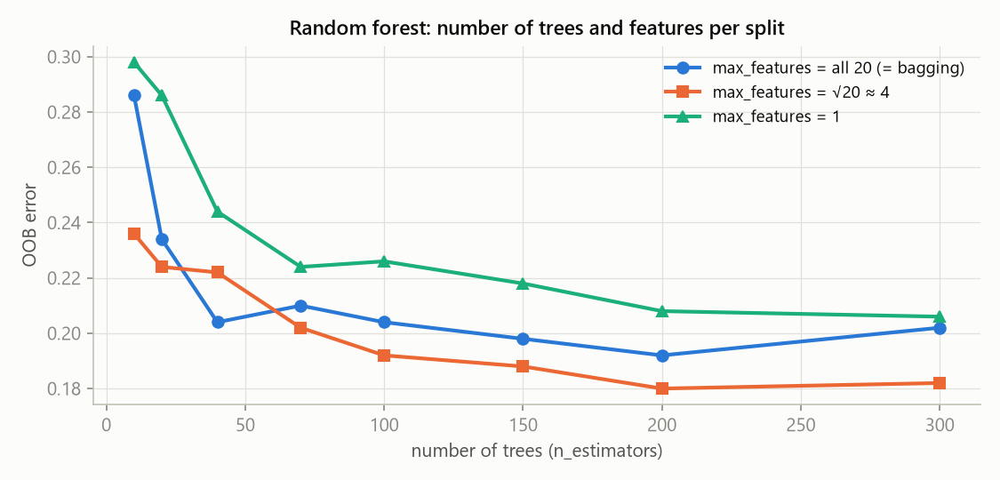
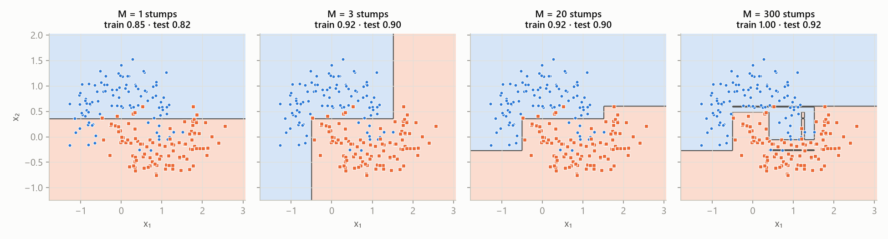

MLR – exam notes · Decision trees and ensembles – MLR · https://balnerm.github.io/pripravy/mlr/en/06_stromy.html
Lecture 6
Decision trees and ensembles
A sequence of yes/no questions is a model – and one that anyone can read. But a single tree is unstable: a small change in the data rewrites the whole tree. The chapter first splits the test error into bias, variance and noise (we can influence two of them), then shows how a tree is built (CART) and how to combine many trees into a stronger model: bagging and random forest reduce variance, boosting reduces bias.
Bias, variance and noise
The training set \(T = \{(\mathbf x_1, y_1), \dots, (\mathbf x_n, y_n)\}\) is a random sample from the distribution \(P(X, Y)\); the algorithm \(\mathcal A\) turns it into a model \(h_T = \mathcal A(T)\). The expected label \(\bar y(\mathbf x) = \mathbb E_{y\mid\mathbf x}[Y]\) is the best possible prediction at the point \(\mathbf x\). The expected model \(\bar h = \mathbb E_{T\sim P^n}[h_T]\) is the average of the models the algorithm would produce from all possible training sets.
\(\bar y\) is “the truth without noise”, \(\bar h\) is what our algorithm “can do on average”. If we had infinitely many training sets, we would average the models learned from them and get \(\bar h\).
| variance | how much the model changes when we change the training data |
| bias² | how far the average model is from the best possible prediction (systematic error of the algorithm) |
| noise | irreducible error of the data – no algorithm and no amount of data removes it |
Derivation: “add and subtract” twice – first \(\bar h(\mathbf x)\), then \(\bar y(\mathbf x)\) – and expand \((a + b)^2 = a^2 + 2ab + b^2\). The cross terms drop out: the first because \(\mathbb E_T[h_T(\mathbf x)] = \bar h(\mathbf x)\), the second because \(\mathbb E_{y\mid\mathbf x}[y] = \bar y(\mathbf x)\).
The bias–variance trade-off is the effect that increasing model complexity usually lowers the bias and raises the variance. Underfitting = the model is too simple, it has high bias (a large error already on the training data). Overfitting = the model is too complex, it has high variance (low training but high test error – it has learned the noise).
a simple model “misses the shape” but is stable; a complex model hits the shape but “jumps around” depending on which data it happened to get. The optimum is in the middle. Noise is the floor we cannot go below.
Bias and variance visually

Targets. Bias = how far the centre of the cluster of dots (the average model \(\bar h\)) is from the centre of the target – it is a systematic error that does not disappear even if we average infinitely many models. Variance = how scattered the dots are around their centre – how sensitively the model reacts to the data it happened to get. Low bias and low variance (top left) is the goal. High bias with low variance (bottom left) is a typical underfitted model – e.g. a line on curved data: almost the same every time, wrong in the same way every time. Low bias with high variance (top right) is a typical overfitted model – e.g. a deep tree: on average it hits the target, but every training set gives a completely different model. Noise is not in the picture – it would “blur” even the centre of the target itself.
Curves. With model complexity (tree depth, polynomial degree, small \(k\) in k-NN, large \(C\) in SVM…) bias² decreases (the model can express a more complex shape) and variance increases (the model has more freedom to adapt to noise). The total test error is their sum plus noise, so it has a “U” shape: on the left bias dominates (underfitting), on the right variance (overfitting). The minimum (“sweet spot”) is where the improvement in bias is balanced by the worsening of variance – we find it by validation. Noise is a horizontal floor below which no model can push the total error.

As the number of samples grows, the training error goes up (more points are harder to “memorize”) and the test error goes down (more data = a better estimate); both approach the same value. Regime 1 – high variance (left): the training error is below \(\varepsilon\), the test error above it, and there is a large gap between them; the gap is exactly the variance. The test curve is still falling, so more data will help, as will a simpler model or bagging. Regime 2 – high bias (right): both curves have already met, but above \(\varepsilon\). More data will not help – the curves converged in the wrong place; you need a more complex model, more features or boosting. At the exam: “first I look at the learning curves to know in which direction to change the model.”
| regime 1: high variance | regime 2: high bias | |
|---|---|---|
| how to recognize | training error ≪ test error; training < \(\varepsilon\), test > \(\varepsilon\) | training error > \(\varepsilon\) and the test error is close to it |
| what helps | more training data; a simpler model; bagging | a more complex model; more features; boosting |
The acceptable error \(\varepsilon\) is given by the application, not by the data. The two regimes need opposite treatment, so first find out which one you are in.
The same on really computed data

The schemes in Fig. 6.1 and 6.2 also hold for a real computation. Left: the training error falls to zero with depth, the test error has a minimum (depth 3) and never drops below the noise 0.20. Middle (tree of depth 8): a large gap, the test error falls below \(\varepsilon\) with more data – regime 1, more data helped. Right (stump): both curves meet around 0.40 above \(\varepsilon\) – regime 2, even 1000 samples do not help.
Decision trees
A decision tree is a model that classifies a sample (or predicts a value) by going from the root to a leaf: each inner node asks one binary question about one feature (e.g. \(x_1 \gt \frac14\)), a branch is the answer and a leaf (terminal node) holds the resulting class or value. The size of a tree is the number of nodes (splits), the depth is the length of the longest path from the root to a leaf. A tree with a single node is a stump.
“twenty questions”: Does it have fur? Does it have four legs? … A prediction costs as many questions as the depth of the tree – it does not depend on the number of training samples.
CART
CART (Classification And Regression Trees, Breiman et al. 1984) is an algorithm that builds a tree by recursive binary splitting: in each node it chooses one feature \(j\) and a threshold \(s\) that reduce the impurity (error) of the two resulting regions the most; it thus splits the feature space into axis-parallel rectangles. It is defined by three rules: the splitting criterion, the stopping rule and the rule for the leaf value (majority class or mean).
“find the question that splits the data most cleanly, and repeat it in each half”.
| \(j, s\) | feature and threshold – we minimize over both |
| \(R_k, R_k^C\) | the two complementary regions created by splitting the \(k\)-th node |
| \(\hat y_R\) | majority class of the region (the leaf value) |
| \(I(\cdot)\) | indicator – counts misclassified points |
In practice Gini or entropy is used instead of the number of errors (see below). In regression the criterion is the sum of squares \(\sum_{i\in R}(y_i - \hat y_R)^2\) and the leaf value is the mean – the model is piecewise constant (“steps”).
- For each region compute the best split – go through the features \(j\) and thresholds \(s\) (by brute force or using histograms).
- Take the best region (with the lowest error) and split it by that feature and threshold into two subregions.
- Repeat for each new subregion until a stopping rule applies.
“Greedy”, because every split is locally the best and is never undone; searching for the globally best tree would be combinatorially impossible. In the lecture example (19 points) five splits reduce the number of errors 9 → 6 → 5 → 4 → 3 → 1 and the sum \(\sum_R n_RG_R\) from 9.47 to 1.60; the last leaf (4 : 1) stays impure because growth is stopped by max_depth = 3.
For the class proportions \(p_R(y)\) in a region \(R\): error rate \(1 - \max_yp_R(y)\); entropy \(H_R = -\sum_y p_R(y)\log p_R(y)\); Gini impurity \(G_R = \sum_y p_R(y)(1 - p_R(y)) = 1 - \sum_y p_R(y)^2\). All are zero for a pure node (a single class) and maximal when the classes are equally represented.
“how mixed the node is”. Gini and entropy are smooth and strictly concave, so they also reward a split that does not change the number of errors but makes one of the nodes purer – that is why they are preferred in practice.
Leaf 4 : 1 (\(p = 0.8\)): 1 error (error rate 0.2); \(H = -0.8\log_20.8 - 0.2\log_20.2 = 0.72\) bits; \(G = 0.8\cdot0.2 + 0.2\cdot0.8 = 0.32\). Root 10 : 9: \(H = 1.00\) bit, \(G = 0.50\). Pure leaf: all three are zero.

All three measures are zero at the edges (pure node) and maximal at \(p = 0.5\). The error rate is piecewise linear – many splits get the same score. Entropy and Gini are curved, so they tell apart a “purer” split even with the same number of errors.
When to stop splitting
- the region contains a single point; split only if the region has more than \(n_{\min}\) points;
- the region contains points of a single class;
- the maximum tree depth or the maximum number of splits (size) is reached.
Without rules the tree grows until every leaf is pure – on the wine data (115 training, 63 test points) the training accuracy grows to 1.00, the test accuracy peaks at depth 2 (0.87) and ends at 0.83 (lecture). An alternative to stopping is pruning: let the tree grow fully and then cut off branches that do not improve the validation error.

A tree splits the space into axis-parallel rectangles. Depth 1 (a stump) can make only one cut – two of the three classes (underfitting). Depth 3 captures the structure. Depth 10 makes narrow strips around individual points: training accuracy 1.00, test accuracy no longer grows. Training accuracy always grows with depth, test accuracy stops and can drop.
| parameter | what it means | ↑ when I increase it | ↓ when I decrease it |
|---|---|---|---|
max_depth | maximum depth (number of questions on a path) | more complex tree, finer rectangles, training error → 0, high variance (overfitting) | simpler tree, higher bias; depth 1 = a stump (underfitting) |
min_samples_leaf | minimum number of samples in a leaf | larger, more “average” leaves, smoother model, less overfitting | leaves even with one point – the tree copies the noise |
min_samples_split (\(n_{\min}\)) | how many points a node must have to be split | earlier stop, smaller tree | even small nodes are split |
max_leaf_nodes / number of splits | size of the tree | more complex model | simpler model |
criterion | Gini / entropy (classification), MSE (regression) | Gini and entropy usually give very similar trees; the error rate is not used for growing | |
ccp_alpha (pruning) | price for each leaf during pruning | more aggressive pruning, smaller tree | the tree stays almost whole |
tune depth and leaf size in CV. A tree does not need feature scaling.
| pros of CART | cons of CART |
|---|---|
| simple and intuitive, readable; handles numeric and categorical features; minimal preprocessing (does not depend on scaling – no normalization needed); handles missing values (surrogate splits); correlated features do not bother it | instability – a small change in the data rewrites the whole tree (cure: bagging, random forest); overfitting of deep trees (cure: stopping rules, pruning, bagging, random forest) |
Ensembles and bagging
An ensemble method combines many base models (here trees) into one stronger model: bagging by a simple average, boosting (AdaBoost) by a weighted average; plus many variants (LPBoost, RUSBoost, RobustBoost, XGBoost…).
“the wisdom of the crowd”. Bagging attacks the variance, boosting the bias.
A bootstrap sample is a random selection of \(n'\) samples from the training set with replacement (usually \(n' = n\)), so some samples appear in it several times and others not at all. Bagging (bootstrap aggregation) trains \(M\) models on \(M\) bootstrap samples and averages their predictions: \(h_{\text{bagg}}(\mathbf x) = \frac1M\sum_{m=1}^Mh_{T_m}(\mathbf x)\) (majority vote for classification).
each tree sees slightly different data and so makes slightly different mistakes; when averaging, the random errors of the individual trees cancel each other out. The bias stays (an average of similarly deep trees), the variance drops.
| \(\sigma_1^2\) | variance of the prediction of one tree (over training sets) |
| \(M\) | number of trees in the average |
| \(\rho\) | correlation between trees – the trees share the same data, so they are not independent |
As \(M\) grows the second term vanishes, but the first \(\rho\sigma_1^2\) stays – the variance does not drop below \(\rho\sigma_1^2\). In the lecture: going from one bootstrap tree to \(M = 50\) reduced the prediction variance from 0.00465 to 0.00175 – 2.7×, not 50×. (Plugging in gives \(\rho \approx 0.36\).) That is why random forest additionally “decorrelates” the trees.

A single tree “jumps” depending on the data it got (mean prediction variance 0.165); the bagged predictions for the same 20 sets are much closer together (0.095) and smoother. The average over the sets (\(\approx\bar h\)) is similar for both – bagging does not change the bias. Right: the more correlated the trees are, the sooner the drop in variance stops.
Random forest
Random forest is bagging of decision trees with one extra source of randomness: at each node split the tree may only choose from a random subset of features. It therefore has two independent sources of randomness – which samples a tree sees (bootstrap) and which features each split may use.
if one feature were very strong, all bagged trees would mainly ask about it and would be similar to each other (high \(\rho\)). The random choice of features forces them to be diverse, the trees are less correlated, and so averaging pays off more.
The out-of-bag samples of a tree are the training samples that did not get into its bootstrap sample (the others are in-bag); they serve as validation data. The OOB score of a sample is computed only from the trees for which that sample is OOB.
a bootstrap of size \(n\) leaves out each sample with probability \((1 - 1/n)^n \to e^{-1} \approx 37\,\%\) (for \(n = 10\): 0.35; \(n = 100\): 0.366) – hence the rule “2/3 in-bag, 1/3 OOB”. This gives an estimate of the test error without cross-validation – useful with small data. But each sample is evaluated by only ≈ 1/3 of the trees, so the OOB score tends to be slightly pessimistic; do not mix OOB and validation scores when comparing models.

max_features.With the number of trees the error drops and then levels off – more trees do not overfit, they only cost more computation. max_features = all features is plain bagging (correlated trees); √d (≈ 4) gives the lowest error; 1 feature per split weakens the trees too much (each split is almost random, higher bias).
| parameter | what it means | ↑ when I increase it | ↓ when I decrease it |
|---|---|---|---|
number of trees \(M\) (n_estimators) | how many trees are averaged | variance drops down to the limit \(\rho\sigma^2\), the result is more stable; it does not overfit, only computation and memory grow | noisier prediction, higher variance |
max_features | how many random features each split may consider | stronger but more similar (correlated) trees; = all ⇒ bagging | more diverse, less correlated trees (variance ↓), but each one weaker (bias ↑); typically √d (classification), d/3 (regression) |
tree depth (max_depth, min_samples_leaf) | complexity of the individual trees | deep trees = low bias, high variance which averaging knocks down – the usual choice | shallow trees = higher bias, which bagging does not fix |
| bootstrap size \(n'\) | how many samples each tree gets | trees more similar to each other | more diverse trees, each weaker |
enough trees (hundreds), tune max_features (√d as a start), let the trees be deep; the OOB score as cheap validation.
| pros of random forest | cons |
|---|---|
| most of the advantages of CART (no scaling, mixed feature types); suitable for small data too (OOB); better performance than one tree, comparable to the best standard methods; test-error estimate without CV (OOB); reliable estimate of feature importance; easy to parallelize; stable, resists overfitting | less interpretable than a single tree; many deep trees = high computational and memory cost in training and prediction; can overfit on noisy and regression data |
Adaptive boosting (AdaBoost)
AdaBoost is an ensemble method that trains weak classifiers \(h_m\) one after another, each on reweighted data (misclassified samples get a higher weight), and the result is their weighted vote: \(H(\mathbf x) = \operatorname{sign}\left(\sum_{m=1}^M\alpha_mh_m(\mathbf x)\right)\) for classes \(\pm1\).
each next “weak learner” focuses on what the previous ones got wrong, and a better learner has a stronger voice in the final vote. Many simple ones (e.g. stumps) make up a strong, complex classifier – boosting reduces bias.
- Initialize the sample weights \(w_i^{(1)} = 1/n\).
- Find the weak classifier \(h_m\) with the smallest weighted error \(\epsilon_m = \sum_{i: h_m(\mathbf x_i)\ne y_i}w_i^{(m)}\).
- Compute its weight \(\alpha_m = \frac12\ln\frac{1 - \epsilon_m}{\epsilon_m}\).
- Reweight the samples: \(w_i^{(m+1)} = w_i^{(m)}e^{-\alpha_my_ih_m(\mathbf x_i)}/Z_m\), where \(Z_m = \sum_iw_i^{(m)}e^{-\alpha_my_ih_m(\mathbf x_i)}\) normalizes the weights to sum to 1.
- Repeat 2–4 for all \(M\) weak classifiers.
Correctly classified samples (\(y_ih_m = +1\)) lose weight (\(e^{-\alpha}\)), wrong ones gain it (\(e^{+\alpha}\)). At \(\epsilon_m = 0.5\) (chance) \(\alpha_m = 0\) – the classifier has no vote; the smaller the error, the larger \(\alpha_m\).
- All weights 0.10. The first stump misclassifies 3 samples: \(\epsilon_1 = 3\cdot0.10 = 0.30\), \(\alpha_1 = \frac12\ln\frac{0.70}{0.30} = 0.42\). (Own calculation: \(Z_1 = 0.917\); correct samples get weight 0.071, wrong ones 0.167.)
- The second stump on the reweighted data gets the three “hard” blue ones right and misclassifies three easy red ones: \(\epsilon_2 = 3\cdot0.07 = 0.21\), \(\alpha_2 = 0.65 \gt \alpha_1\).
- The third (horizontal) one misclassifies three of the four lightest samples (each exactly 1/22): \(\epsilon_3 = 0.14\), \(\alpha_3 = 0.92\).
- \(H(\mathbf x) = \operatorname{sign}(0.42h_1 + 0.65h_2 + 0.92h_3)\) – three axis-parallel stumps give a non-trivial region that classifies all 10 samples correctly.

One stump = one cut (high bias). Each round adds a cut where mistakes were made so far – the boundary becomes more and more complex and the bias drops (test 0.82 → 0.90). At 300 rounds the training accuracy reaches 1.00 thanks to narrow “spikes” around individual points. Label noise (lecture): three mislabelled samples out of 80 start with 3.75 % of the total weight and after 40 rounds hold 37 %; the training error is 0 thanks to strips narrower than 0.01 around them – AdaBoost is sensitive to wrong labels.
| parameter | what it means | ↑ when I increase it | ↓ when I decrease it |
|---|---|---|---|
number of rounds \(M\) (n_estimators) | how many weak classifiers are added one after another | bias ↓, more complex boundary; with label noise overfitting (the weight concentrates on the wrong samples) | simpler model, higher bias (underfitting) |
| type / strength of the weak classifier | e.g. a stump (depth 1), a shallow tree | a stronger learner (deeper tree) = faster drop of the error, but easier overfitting | stumps = slow but safe progress |
learning_rate (scikit-learn) | shrinking of the weights \(\alpha_m\) of each learner | faster learning, fewer rounds are enough | slower, more rounds needed, usually generalizes better |
few hyperparameters – mainly the number of rounds and the type of weak classifier; tune the number of rounds on validation data (early stopping).
| pros of AdaBoost | cons |
|---|---|
| fast and simple; can combine any ML algorithms and even expert decisions; few hyperparameters (number of rounds, type of weak classifier); extensible to more classes (AdaBoost.M2) | tends to overfit; sensitive to label noise |
| bagging / random forest | boosting (AdaBoost) | |
|---|---|---|
| what it reduces | variance | bias |
| base models | deep, independently trained trees | weak (stumps), trained one after another |
| combination | simple average / vote | weighted vote (\(\alpha_m\)) |
| parallelization | yes (the trees are independent) | no (each round depends on the previous one) |
| label noise | robust | sensitive |
Other tree algorithms and pruning
The information gain of a feature is the difference between the entropy of the target before the split and the weighted (expected) entropy after splitting by the values of the feature. The ID3 algorithm (Quinlan 1986) splits each node by the feature with the largest information gain; it works only with categorical features. C4.5 / C5.0 is its modification that also handles numeric features.
“how many bits of uncertainty about the target I lose when I ask about this feature”. Procedure: total information → expected information for each feature → gain → split by the largest → repeat recursively.
| animal | skin | legs | eyes | cute |
|---|---|---|---|---|
| kitten | fur | 4 | 2 | yes |
| snake | scales | 0 | 2 | no |
| spider | chitin | 8 | 8 | no |
| zebra | fur | 4 | 2 | no |
| duck | feathers | 2 | 2 | no |
- Target = animal (5 classes with one sample each): \(H = \log_25 = 2.32\) bits.
- Expected information after splitting by legs: {4: kitten, zebra}, {0}, {8}, {2} ⇒ \(\frac25\cdot1 + 0 + 0 + 0 = 0.40\) bits; by eyes: {2: four animals}, {8} ⇒ \(\frac45\cdot2 = 1.60\) bits.
- Gain: legs 1.92; skin 1.92; eyes 0.72; cute 0.72 bits.
- Split by legs or skin (a tie); then repeat in the branch that still mixes classes ({kitten, zebra}).
Other algorithms: CHAID (Chi-squared Automatic Interaction Detection), MARS (Multivariate Adaptive Regression Splines). Pruning: first let the whole tree grow and then cut off branches that do not improve the validation error – an alternative to stopping rules.
“The expected test error splits into variance – how much the model changes with the training data –, bias² – how far the average model is from the best prediction – and irreducible noise. A large gap between training and test error means high variance: more data, a simpler model or bagging help. A high error even on training means bias: a more complex model, features or boosting help. CART builds a tree greedily – in each node it chooses the feature and threshold minimizing Gini or entropy – and stops by depth or leaf size. A tree is readable but unstable. Bagging averages trees from bootstrap samples and reduces variance, limited by the correlation of the trees; random forest decorrelates them by a random choice of features per split and offers an OOB error estimate. AdaBoost trains weak classifiers one after another on reweighted data and weights them by \(\alpha_m = \frac12\ln\frac{1-\epsilon_m}{\epsilon_m}\); it reduces bias but is sensitive to label noise.”
Summary
Test error = variance + bias² + noise; model complexity balances bias and variance, and learning curves show which one dominates. A decision tree asks binary questions about single features and splits the space into axis-parallel rectangles; CART builds it greedily by impurity (Gini, entropy; squares for regression) and stops by depth, leaf size or purity, or prunes. A tree does not need scaling, but it is unstable and a deep one overfits. Bagging averages trees trained on bootstrap samples and reduces variance, but only down to \(\rho\sigma^2\); random forest adds a random subset of features per split, which decorrelates the trees, and the OOB samples (≈ 37 %) give an error estimate without CV. AdaBoost adds weak classifiers one after another on reweighted data with weights \(\alpha_m\), reduces bias but overfits on wrong labels. ID3 splits by information gain.
Take-home messages
- Error = variance + bias² + noise; you cannot remove the noise.
- Large train–test gap = variance (more data, simpler model, bagging); high error everywhere = bias (more complex model, boosting).
- CART: greedy splitting by Gini/entropy, axis-parallel cuts, no scaling.
- ↑max_depth and ↓min_samples_leaf = more complex tree = overfitting.
- Bagging reduces variance only down to \(\rho\sigma^2\) – RF decorrelates the trees by feature sampling.
- More trees in RF do not overfit; OOB ≈ 1/3 of the data as free validation.
- AdaBoost: \(\alpha_m = \frac12\ln\frac{1-\epsilon_m}{\epsilon_m}\), reweights the mistakes; sensitive to label noise.
Exam questions
Write the decomposition of the expected test error into bias, variance and noise. Which terms can we influence and how?
\(\mathbb E[(h_T(\mathbf x) - y)^2] = \mathbb E[(h_T - \bar h)^2] + \mathbb E[(\bar h - \bar y)^2] + \mathbb E[(\bar y - y)^2]\) = variance + bias² + noise. \(\bar h\) is the average model over training sets, \(\bar y\) the expected label. The cross terms drop out because \(\mathbb E_T[h_T] = \bar h\) and \(\mathbb E_{y|\mathbf x}[y] = \bar y\). We can influence the variance (more data, a simpler model, bagging, regularization) and the bias (a more complex model, more features, boosting); not the noise.
You see a large gap between training and test error. Which regime is it and what do you do? And when the training error is above ε?
A large gap (training < ε < test) = high variance: more training data, a simpler model (smaller depth, regularization), bagging. Training error above ε and test error close to it = high bias: more data will not help (the curves have already converged to a bad value); a more complex model, more features or boosting are needed.
Define node, leaf, branch, size and depth of a tree. What is a stump? Write the CART splitting criterion.
Node = a binary question about one feature; leaf = a terminal node with the answer; branch = the answer to a question; size = number of nodes (splits); depth = the longest root–leaf path; stump = a tree with a single node. CART minimizes, over the feature \(j\) and the threshold \(s\), the sum of the errors (impurities) of both resulting regions \(E_{R_k}(j,s) + E_{R_k^C}(j,s)\), \(R_k = \{x_{ij} \gt s\}\). It is greedy – it picks the locally best split and does not go back; a globally optimal tree would be combinatorially out of reach.
Compare error rate, entropy and Gini. Compute them for a leaf 4 : 1.
Error rate \(1 - \max p\), entropy \(-\sum p\log_2p\), Gini \(\sum p(1-p)\); all are 0 for a pure node, maximal when classes are equally represented. Leaf 4 : 1: error rate 0.2 (1 error), entropy 0.72 bits, Gini 0.32. Gini and entropy are smooth and concave, so they also reward a split that does not change the number of errors but creates a purer node – that is why they are preferred for growing.
How does a regression tree differ from a classification tree?
The splitting criterion is the sum of squared deviations from the mean of the region instead of impurity; the leaf value is the mean of \(y\) of the points in the leaf instead of the majority class; the resulting function is piecewise constant (“steps”).
What is a bootstrap? Why should the average of M trees reduce the variance M times, and why only 2–3× in practice?
Bootstrap = selecting \(n\) samples with replacement. The variance of the average of \(M\) independent variables is \(\sigma^2/M\). But trees from bootstraps of the same data are correlated (correlation \(\rho\)): \(\operatorname{Var} = \rho\sigma^2 + (1-\rho)\sigma^2/M\) – the first term does not decrease with \(M\). In the lecture \(M = 50\) reduced the variance only 2.7× (corresponds to \(\rho \approx 0.36\)).
What does random forest add to bagging and why does it help? What are OOB samples?
At each split only a random subset of features is considered (typically √d). The trees are more diverse and less correlated, so averaging reduces the variance more. The OOB samples of a tree are those that did not get into its bootstrap – \((1 - 1/n)^n \to e^{-1} \approx 37\,\%\); they serve as validation data and give an error estimate without CV. Each sample is evaluated by only ≈ 1/3 of the trees, so OOB is slightly pessimistic and should not be mixed with validation scores.
Write the AdaBoost prediction rule and the formula for αₘ. What does αₘ do at εₘ = 0.5? How are the weights updated and what is Zₘ for?
\(H(\mathbf x) = \operatorname{sign}(\sum_m\alpha_mh_m(\mathbf x))\), \(\alpha_m = \frac12\ln\frac{1-\epsilon_m}{\epsilon_m}\); at \(\epsilon_m = 0.5\) \(\alpha_m = 0\) – a random classifier has no vote, with a small error the weight is large. Weights: \(w_i \leftarrow w_ie^{-\alpha_my_ih_m(\mathbf x_i)}/Z_m\) – misclassified ones grow, correct ones shrink; \(Z_m\) is the normalization constant so that the weights sum to 1. Sensitivity to noise: a mislabelled sample is “always wrong”, its weight grows round after round and the next classifiers try to get it right at any cost.
Bagging vs. boosting: which error term does each reduce and which can be parallelized?
Bagging (and random forest) reduces variance by averaging independently trained (deep) trees – parallelizable. Boosting reduces bias by adding weak classifiers one after another, each focused on the mistakes of the previous ones – sequential, it cannot be parallelized.